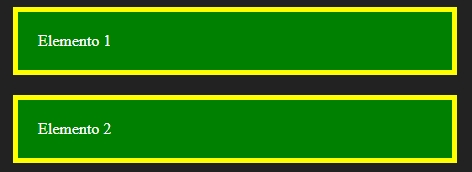
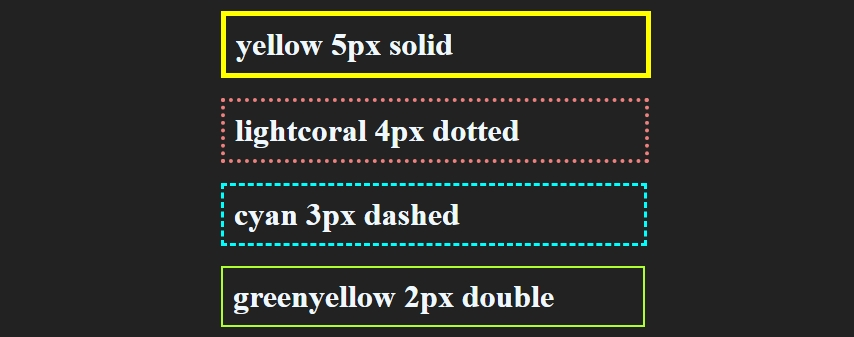

Elementos HTML possuem borda, margem e padding, que é a margem interna entre o conteúdo e a borda, estas propriedades por padrão são definidas como 0 na maioria dos elementos, até que um atributo a defina.
Vejamos como configurar estes valores:
Enquanto a margem define um espaço vazio entre a borda de um conteúdo e outro, o padding define um espaço vazio entre o conteúdo e sua própria borda, a cor de fundo de um objeto é aplicada ao conteúdo e o padding e não atinge a borda:
Meu parágrafo 1
Neste exemplo temos um parágrafo definido com padding de 20px e margem de 10px, se adicionarmos uma cor de fundo e uma borda poderemos ver como essas propriedades são aplicadas, observe este exemplo:
Elemento 1Elemento 2
O resultado do código acima será este:
O padding neste caso é o espaço vazio entre o texto e a borda amarela e a margem é o espaço entre a borda e o elemento vizinho.
Definimos bordas básicas com três valores, a cor, a espessura e o tipo, vejamos alguns exemplos:
Elemento 1Elemento 3Elemento 2Elemento 4
Adicionando uma margem e um padding em cada elemento no código acima, teremos o seguinte resultado:
